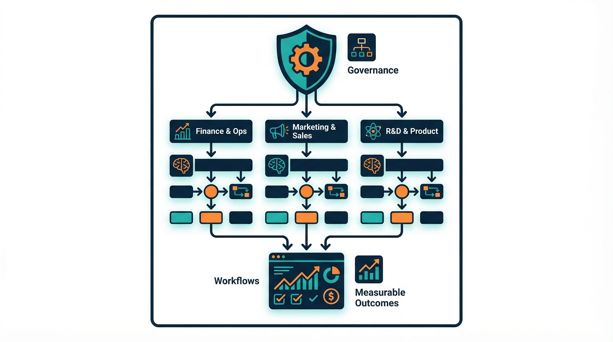
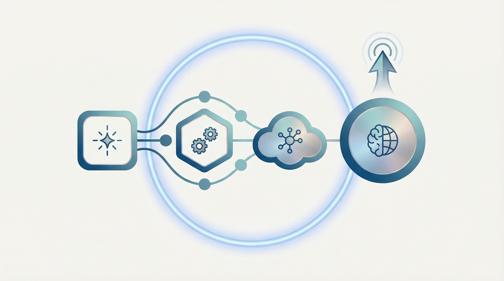

OpenClaw Enterprise Enablement
OpenClaw企業導入支援サービス
AIを“試す”から、“業務成果に変える”へ。
現場活用・ルール整備・定着支援まで、企業導入を一気通貫で伴走。
1部署のPoCから全社展開まで対応
現場活用とガバナンスを両立
Business 80万円/月を本命提案に設計
提案用営業資料 / 2026.03 / MAKE A CHANGE
02
AI導入が止まる理由は、ツール不足ではなく導入設計不足です
多くの企業は「試用」までは進んでも、本番運用で失速します。
- 現場が何に使えばよいかわからない
- セキュリティ・権限・運用ルールが曖昧
- 部署ごとに試しており、全社展開の型がない
- 効果測定ができず、投資判断が止まる
- 導入責任者だけが孤立し、社内調整が進まない
失敗要因は「導入設計」と「定着支援」にあります。
03
OpenClawは、企業のAI運用基盤として価値を出せます
単発チャットではなく、業務・権限・ワークフローに合わせて設計できることが強みです。
- 業務に合わせたアシスタント運用がしやすい
- チーム / 役割ごとの活用設計がしやすい
- 既存のSlack / Notion / Google Workspace等と接続しやすい
- 単発利用ではなく、改善前提の継続運用に向く
対象企業
50〜1,000名
重点KPI
利用率 / 工数削減 / 定着数
提案重心
PoCではなく本番定着
04
しかし、OpenClawを入れるだけでは成果は自動で出ません
企業導入に必要なのは、対象業務の選定から改善運用までの設計です。
- 対象業務の選定
- 利用ルール / 権限設計
- 部署別ユースケース設計
- 利用教育
- KPI設計
- 定着 / 改善サイクル

だからこそ、導入支援サービスが必要です。
05
提案するのは「導入」ではなく「成果化までの伴走」です
設計 → 導入 → 定着の3フェーズで、PoC止まりを防ぎます。
診断・設計
現状業務、課題、活用余地、リスクを整理し、どこから始めるかを明確化
導入・構築
初期設定、ユースケース設計、標準連携、運用ルール整備、試験導入
定着・成果化
研修、月次レビュー、KPIモニタリング、改善提案、横展開

06
支援内容は、IT導入支援 + 業務設計 + チェンジマネジメント
単なる研修会社でも、単なるSaaS代理店でもないことを明確に伝えます。
導入前
- AI導入アセスメント
- 業務ヒアリング
- 優先ユースケース整理
- リスク論点の棚卸し
導入中
- 権限 / ポリシー整備
- 標準連携の初期設定
- 業務フローへの組み込み設計
- 社内説明資料の整備
導入後
- 管理者 / 現場向け研修
- 月次レビュー / 改善提案
- KPI設計と効果測定
- 追加ユースケースの横展開
07
特に刺さるのは、AI活用を本番運用へ進めたい企業です
100〜1,000名の中堅企業を主対象に置くと提案が通しやすくなります。
DX / 情シス責任者
- 全社で再現性あるAI活用を進めたい
- セキュリティと統制が不安
- 経営に投資対効果を説明したい
事業部長 / 現場責任者
- 資料作成や情報整理の工数を減らしたい
- メンバーに定着する運用がほしい
- 導入後の改善まで手が回らない
経営者 / 役員
- 小さく始めて成果が見えたら広げたい
- AI投資の回収ロジックを持ちたい
- 部署任せではなく全社方針にしたい
08
営業で約束すべきは、便利さではなく再現性のある業務成果です
定量KPIと定性価値をセットで見せると、高単価でも納得感が出ます。
- 提案書 / 議事録 / レポート作成時間の短縮
- 問い合わせ一次対応・情報検索の効率化
- 利用ルール整備による社内不安の軽減
- 部署横断で活用ノウハウを共有しやすい状態の実現
90日以内アクティブ利用率
60%以上
重点業務の作業時間削減
20〜40%
部署別ユースケース定着数
3件以上
1チームあたり1〜2名分の工数削減余地が見えれば、投資回収を説明しやすくなります。
09
価格は「安さ」ではなく「導入を前に進める伴走価値」で設計します
入口はPilot、本命はBusiness、粗利と差別化の本命はEnterpriseです。
Pilot / 部門導入
初期60万円 / 月額35万円
1部署でPoC〜初期定着。3〜6か月想定
Business / 本格運用
初期150万円 / 月額80万円
複数部門展開・運用定着・全社展開準備
Enterprise / 全社導入
初期400万円〜 / 月額150万円〜
高ガバナンス要件・複数部門横断・全社標準化
個別開発
150万円〜800万円以上
API連携・ワークフロー構築・個社要件対応
値引きではなく、対象部門数・定例頻度・連携範囲・SLAで調整する。
10
Businessを主力に据えると、売上計画と黒字化ラインを説明しやすい
PLと営業メッセージを揃えることで、価格への納得感が上がります。
- 黒字化ラインの目安は Business 5社前後
- または Business 3社 + Enterprise 1社で月次黒字化が見える
- Pilot偏重は利益率を落とすため、入口商品として位置づける
- Enterpriseは安売りせず、高難度案件として粗利を守る
通常シナリオ Year1売上
8,200万円
通常シナリオ Year1営業利益
2,114万円
通常シナリオ Year3売上
3.38億円
通常シナリオ Year3営業利益
1.92億円
11
選ばれる理由は、「軽すぎず、重すぎない」実装伴走にあります
大手コンサルほど重くなく、ツール単体導入より深い。このポジションを言語化します。
よくある支援会社
- 研修で終わる
- ツール説明に寄る
- 導入後の定着責任が曖昧
OpenClaw導入支援
- 業務実装まで踏み込む
- 現場活用とガバナンスを両立
- 定着 / 改善まで伴走
大手SI / コンサル
- 安心感はあるが重い
- 初期費用が大きい
- スモールスタートしにくい
“AI導入支援”ではなく、“AI活用の事業実装支援”です。
12
まずは60分で、どの業務から始めるべきかを整理します
初回商談では、導入の可否ではなく「成果の出しやすい始め方」を一緒に決めます。
- どの業務から始めると成果が出やすいか
- どの部門で先行導入すべきか
- セキュリティ / 運用上の懸念は何か
- Pilotで始めるべきか、Businessから進めるべきか
OpenClawを導入するだけでは終わらせない。現場で使われ、成果につながるところまで支援します。